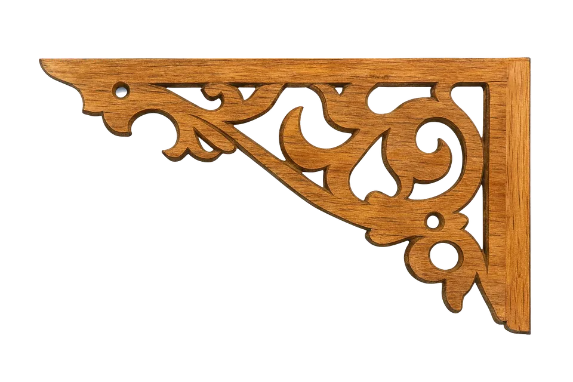

Konzeptkunst
Design- und Modellblätter für alles in der Vertical Slice.
Die Arbeitszeichnungen hinter dem Spiel: jeder Held, jeder Stadtbewohner, jede Kreatur, jedes Gebäude und jedes Requisit, gezeichnet, bevor es gebaut wird.
Figuren entstehen als polierte, halbrealistische 3D-Spielfiguren. Die Welt, ihre Gebäude und Requisiten sind gemalte Konzeptkunst. Viele Blätter zeigen ein Objekt von mehreren Seiten, weil sie als Vorlage für die 3D-Modelle dienen. Leere Rahmen sind Blätter, die noch kommen.



CONCEPT-GEARDemnächst